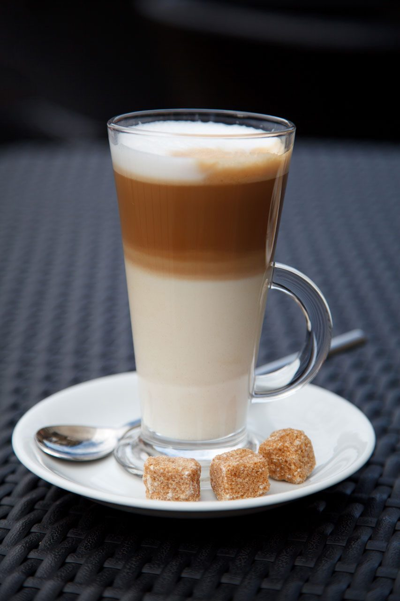

3 / みずぬきあな
メニュー
メニューは準備中です。お店からご提供いただいた内容に差し替えます。
水抜き穴 / 裏の水を外へ
メニューは準備中
| ドリンク | 準備中 |
|---|---|
| フード | 準備中 |
| 価格 | 準備中 |
提供内容や価格は確認できていないため、掲載していません。下の写真はイメージで、お店の商品を示すものではありません。

ギャラリー(イメージ)
カップと、パンの断面。


3 / みずぬきあな
メニューは準備中です。お店からご提供いただいた内容に差し替えます。
水抜き穴 / 裏の水を外へ
| ドリンク | 準備中 |
|---|---|
| フード | 準備中 |
| 価格 | 準備中 |
提供内容や価格は確認できていないため、掲載していません。下の写真はイメージで、お店の商品を示すものではありません。

ギャラリー(イメージ)